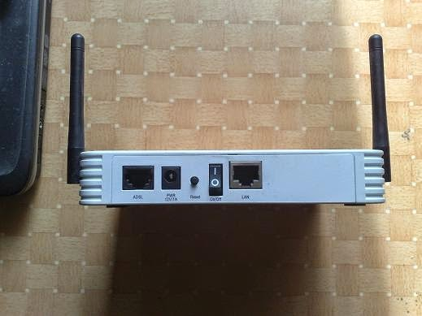
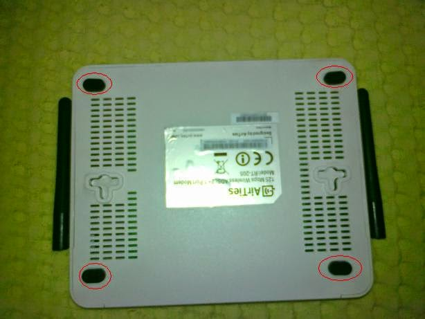
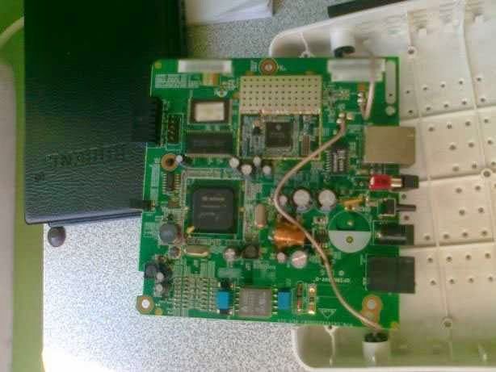
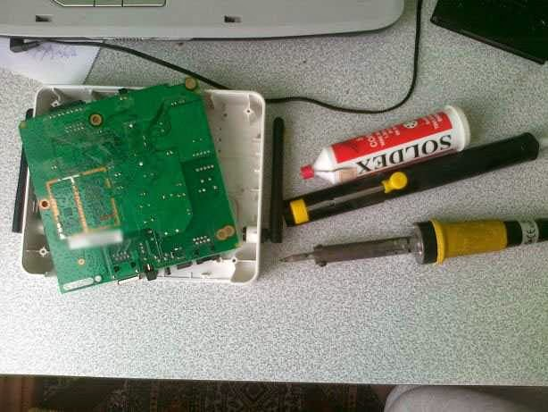
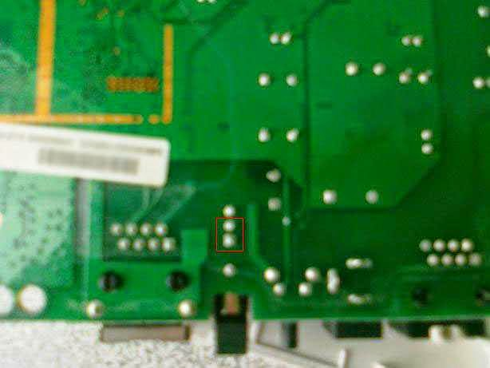
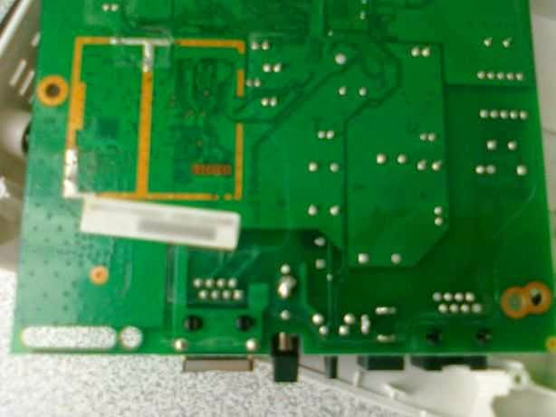
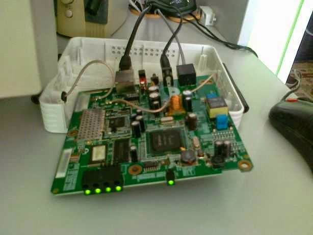

AirTies RT-205 Açma - Kapama Düğmesi Arızası (215-2-16299193)
Info
Bu işlemi deneyen okuyucular sadece AirTies RT-205 için değil AirTies RT-206 ve RT-210 v2 için de yöntemin yaradığını bildirmiştir ve toplamda 28 kişi modemlerini tamir etmiştir.
Yanlış hatırlamıyorsam bu modemi 2008 yılı sonunda almıştım. Modemi evde kullanıyorum. Evdeki interneti günde yaklaşık 5 - 6 saat kullandığım için modemi sürekli açık tutmuyorum. Evdeki 1 Mbit 4 GB kotalı internet ile zaten öyle adam gibi dosya indirmek mümkün olmuyor. Bu internete 30 TL’ye yakın ücret ödüyoruz ya, o da ayrı bir konu. Neyse, modemi sürekli açık tutmamak için arkasındaki açma kapama düğmesinden kapatıp açıyorum (günde 2 veya 3 defa). Daha doğrusu kapatıp açıyordum. Yaklaşık 150 TL saydığımız AirTies RT-205 modem yaklaşık 1 - 2 hafta sonra su koyvermeye başladı. Arkadaki açma - kapama düğmesi arıza sinyalleri vermeye başladı.

AirTies RT-205 Arka Görüntüsü
Modemi kapatmakta bir sorun yoktu da açılırken düğme tam temas etmiyor, temas ettirmek için biraz bastırmak gerekiyordu. Modeme olan ihtiyaç ve yoğunluktan dolayı teknik servise veremedim. Muhtemelen de 2 haftadan önce teknik servisten gelmezdi. Biz de ev halkı olarak modemin düğmesini hep açık tutup, enerji kablosunu takıp çıkararak açıp kapamaya başladık. Düğmeden kontrol etmek daha doğru olsa da en uygun çözüm bu oldu.
Gel zaman, git zaman düğme hep açık dururken bile zaman zaman temassızlık yapmaya başlamıştı. Artık 1 konumundayken bile bazen tam olarak temas etmiyordu. Biraz daha bastırınca cihaz doğru düzgün çalışabiliyordu. Düğme yarım basık olduğu zaman modemin güç ışığı hafif sönük ve titrek yanıyor. Bu durumda diğer ışıkların (internet, kablosuz, yerel ağ, vs.) hiçbiri yanmıyordu. Düğmeyi günden güne bastırarak kullanmaya devam ettik.
Son günlerde düğme iyice bozuldu. Artık cihaz çalışırken durup dururken reset atıyor, internet bağlantısı gidiyordu. Garantinin bitmesinden ve merakımdan aldığım cesaretle cihazı açmaya çalıştım. :)
Modemi Tamir Ediyoruz
Warning
Eğer siz de benzer bir problem yaşıyor ve kendi riskinizi alarak “Ben de yaparım.” diyorsanız aşağıdaki adımları takip edebilirsiniz.
Note
Bu yazıyı 2011 senesinde hazırlarken çok net fotoğraflar çekemedim. Fakat fotoğraflar yapılan işlemi anlayacak kadar çözünürlüğe sahipler.
Modemin Kutusunun Açılması
Modemi açmak için öncelikle alt kısmında bulunan, aşağıda kırmızı halkalar ile işaretlediğim yapışkanlı kısımları kaldırmanız gerekiyor. Tornavida yardımıyla rahat bir şekilde yapışkanlı kısmı kaldırabilirsiniz. Modemi toparladıktan sonra tekrar takmak için kaybetmemekte fayda var. Daha sonra söktüğünüz kısımların altında birer tane vida göreceksiniz, sökün.

AirTies RT-205 Alt Görüntüsü
Modemin kutusunu açarken dikkatli olmakta fayda var. Çünkü antenlere giden kablolar bulunuyor. Kartı kutudan tamamen ayırmak için kartı, kutuya bağlayan vidaları (Bende 3 tane vardı.) da sökün. Şöyle bir kart ile karşı karşıya kalacaksınız:

AirTies RT-205 Kart
Düğmenin Devre Dışı Bırakılması
Elimde düğme yerine takabileceğim herhangi bir düğme olmadığı için ben düğmeyi devre dışı bırakıp, cihazı düğmeden bağımsız olarak açık kalmasını sağlamak istedim. Bunun için düğmenin iki adet pini kısa devre etmek yeterlidir. Evde olduğum için elimde bir multimetre bile yoktu. Multimetre, bir elektronikçinin adeta gözü olduğu için ekipman sıkıntımın olduğu bir gerçek. :) Neyse ki havya, lehim ve lehim pompası vardı ve multimetresiz hangi pinleri kullanacağımı bulabildim.

Havya, Lehim ve Lehim Pompası
Arkadaki düğmeyi devre dışı bırakıp, cihazı sürekli açık tutmak için kısa devre etmemiz gereken pinleri ise aşağıdaki resimde kırmızı dikdörtgen içine aldım.

AirTies RT-205 Kısa Devre Edilecek Düğme Pinleri
Eğer lehim yapma tecrübeniz varsa bu iki pini kısa devre etmek zor olmayacaktır. Sonuç:

AirTies RT-205 Kısa Devre Edilmiş Açma – Kapama Düğmesi
Mutlu Son

Kısa Devre Edilmiş Düğme ile Çalışan Modem
Modeminizin çalıştığına emin olduktan sonra kutuyu açtığınız gibi kapatınız. :)
Son Sözler
Bu işlemi yaklaşık 10 gün önce yaptım ve benzer bir problem yaşayanlara yardımcı olması için bu yazıyı yazmaya karar verdim. Yazıyı hazırlarken dikkatimi çeken bir nokta da benzer şikayetlerin, burada olduğu gibi, internette var olması. Yüzlerce lira verdiğiniz bir ürünün böyle uyduruk bir kısımdan arıza yapması AirTies için kötü bir durum. Firmanın bu tarz bir arıza ile kullanıcın canını sıkması hoş değil.
Sorunsuz günler dileği ile…
Bu yöntem sizin de probleminizi çözdüyse siz de iletmek ister misiniz?